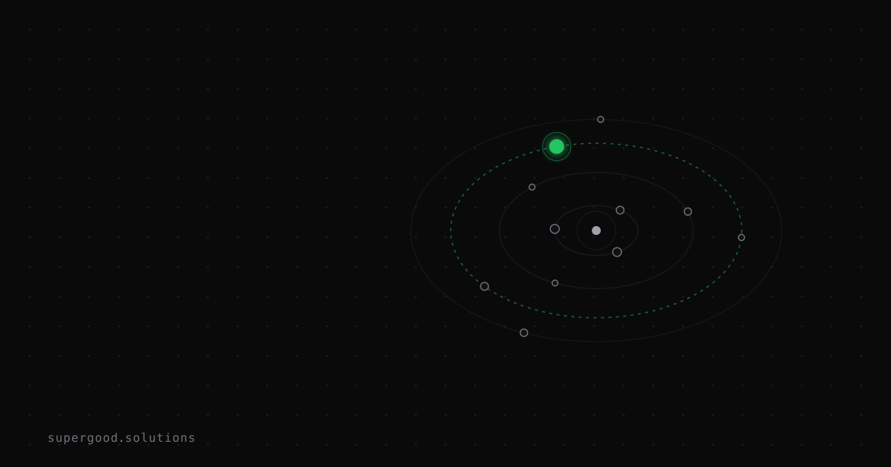

AI, Actually: Why AI Is Confidently Wrong Sometimes (Hallucination, Explained)
TL;DR: Hallucination isn't a bug waiting to be patched — it's a structural consequence of how language models generate text. Once you understand why it happens, the right response is an architecture choice, not a prayer to the next model release.
Key Insight
Every LLM is a lossy compression of its training data. At inference time, the model predicts the next most-likely token given everything that came before. It doesn't look anything up. It has no internal truth table to consult. When the training data doesn't contain a clean path to the right answer, the model interpolates across what it has seen. That interpolation is often useful. Sometimes it invents.
That's the engineering, not a defect in it — the same architecture that makes these models fluent, generalizable, and fast also makes them confidently wrong on certain inputs.
The "next model will fix it" assumption deserves a direct challenge: every major model generation has reduced hallucination rates on benchmarks. None has eliminated it, and for good reason: parametric memory is a fundamentally different thing from a database query. It will improve; it will not become perfect. Building around that expectation is not pessimism, it's product hygiene.
Why Teams Miss This
Teams new to deploying LLMs tend to treat hallucination as one problem. It isn't. There are at least four distinct failure modes that get averaged into a single "is it right?" score:
Factual hallucination — the model asserts something that contradicts verifiable world knowledge. Fix: retrieval or tool calls upstream of generation so the model works from retrieved facts, not compressed memory.
Grounding hallucination — the model contradicts information you explicitly put in the context window. This one stings the most because you gave it the right answer and it ignored it. Fix: stricter prompt constraints and claim-level entailment checks against the retrieved content.
Citation hallucination — the model fabricates a source, or cites a real source that doesn't actually support the claim. Legal and compliance teams find this one in audits. Fix: schema-enforced citations and a registry check to verify the source resolves and contains the stated content.
Reasoning hallucination — the model reaches the right-sounding conclusion via broken inference. The answer looks plausible, the logic is wrong. Hardest to catch because it passes surface-level review. Fix: step-by-step chain scoring, not just output scoring.
A single "groundedness score of 0.92" can hide all four of these at once. Three distinct bugs behind one dashboard metric. Teams iterate the prompt, lift the number two points, and ship, fixing one failure mode while regressing another.
How to Actually Do It
The pattern that works in production is a verification layer, not a better prompt:
1. Know which failure mode you're exposed to. A customer-service bot hallucinating product specs is a grounding problem. A legal research assistant fabricating case citations is a citation problem. Diagnosis first.
2. Pull the model away from pure parametric memory. RAG (retrieval-augmented generation) is the standard answer for factual and grounding hallucinations. Give the model the facts in the prompt; instruct it explicitly to cite them and refuse if unsupported.
system_prompt = """
Answer only using the provided context below.
If the context does not contain sufficient information to answer, say:
"I don't have enough information to answer this reliably."
Do not infer or extrapolate beyond what is stated.
Context:
{retrieved_context}
"""3. Run output through a verifier, not just the original model. A second model pass (or a structured checker) that re-reads the answer against the source context catches grounding failures the user never sees. This is cheap at inference and expensive to skip when it fails in production.
4. Instrument for failure mode, not just accuracy. Log which type of hallucination you're catching, not just that you caught one. Without that split, you have no idea if your mitigations are working on the right problem.
5. Set honest expectations with users. "AI-generated, please verify critical details" is the right interface design for anything where a wrong answer has real cost, not a cop-out. Users calibrate well when you're straight with them.
What We've Learned
Pick one failure mode that currently costs you the most (failed audits, user complaints, wrong citations) and build a targeted detector for it this sprint. Don't wait for a universal hallucination score to turn green. Reliable AI in production comes from verification built into the architecture before users find the gaps, not from having the best model.
Sources
- LLM Hallucination: A 2026 Architectural Deep Dive — futureagi.com
- A Concise Review of Hallucinations in LLMs and their Mitigation — arxiv.org
- A Comprehensive Survey of Hallucination in Large Language Models — arxiv.org
Have a specific workflow in mind?
Bring it to a Quick Scan — a live working session where we'll tell you honestly whether it should be an agent, a workflow, or left alone, before you spend a dollar building it. You get 3 prioritized recommendations on the call, a one-page summary after, and the $500 credited toward any engagement within 30 days.
Get new posts + practical agent-ops notes
One email when something new goes up. No nurture sequence, no spam — unsubscribe whenever you want.